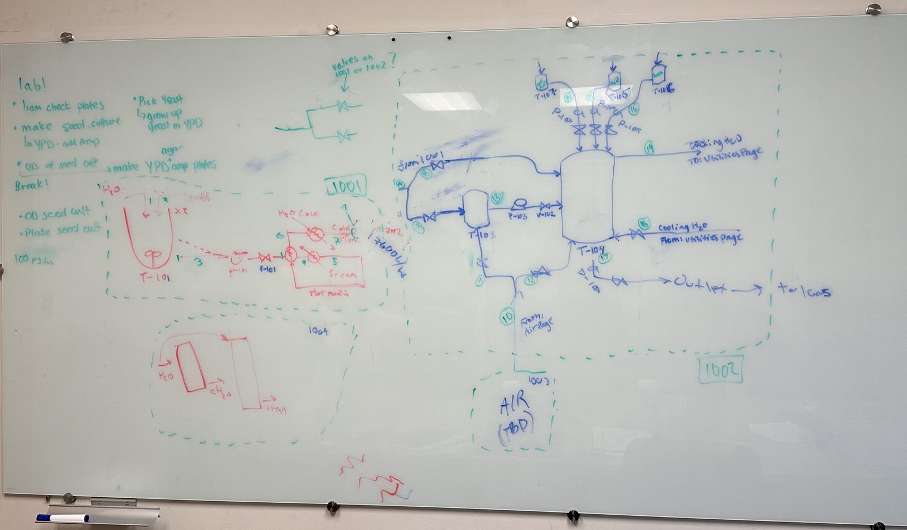
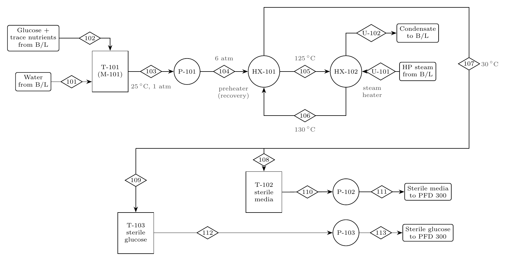
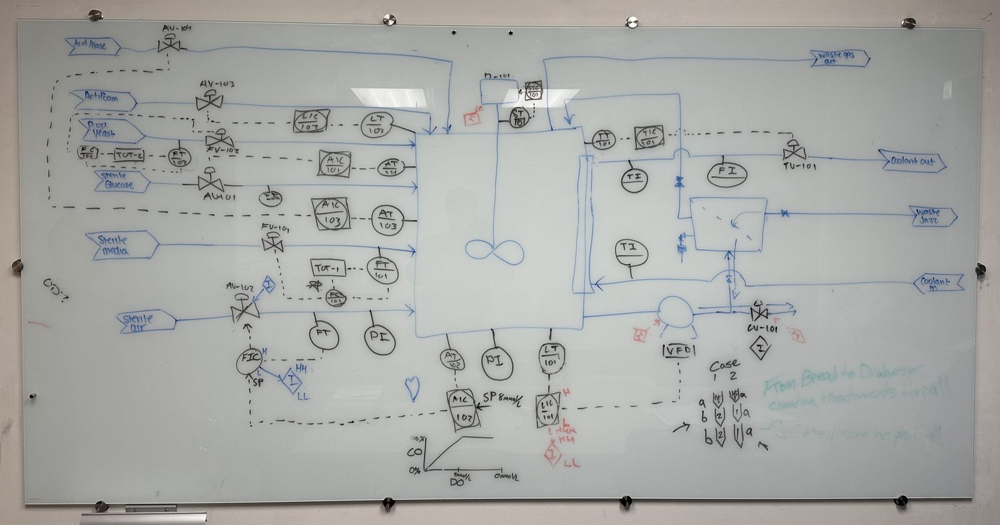
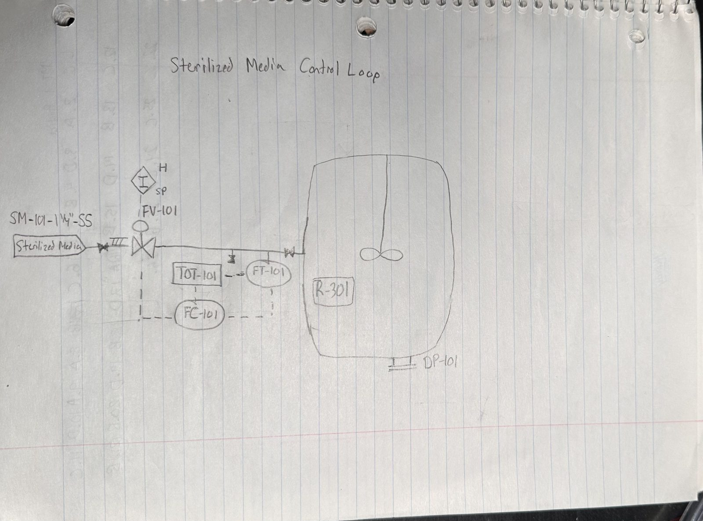
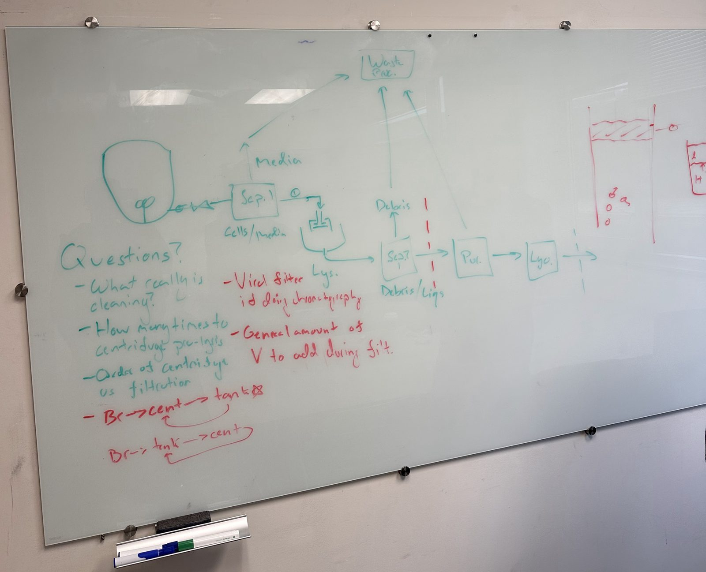
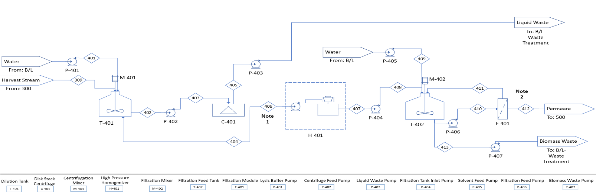
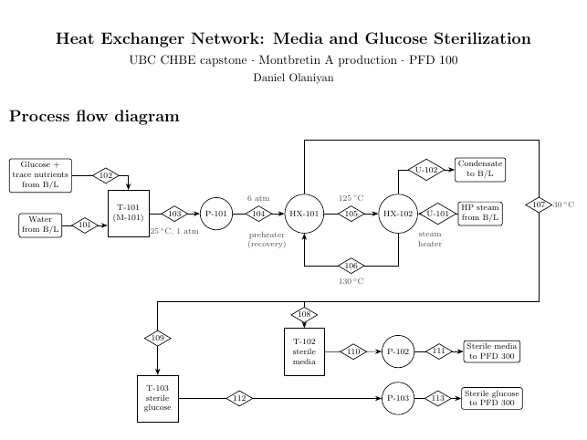
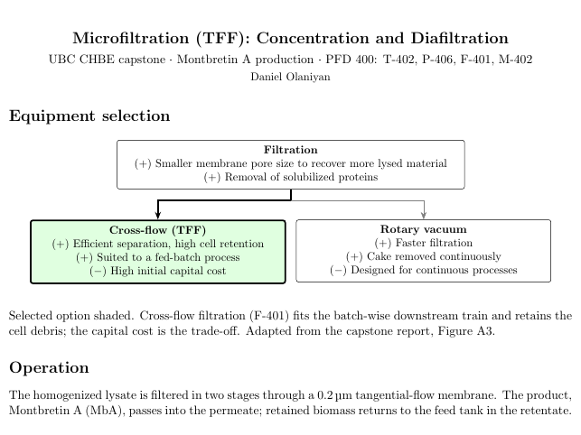
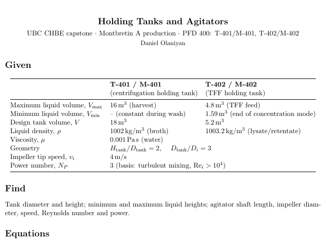

Production-scale design of a plant making Montbretin A (MbA), a potential type 2 diabetes therapeutic, from bioengineered Saccharomyces cerevisiae yeast.
- Program
- UBC Chemical and Biological Engineering capstone
- Sponsor
- UBC Michael Smith Laboratories
- Team
- 7 students
- Role
- Team coordinator · Heat integration · Economics · Biomass separation
- Tools
- Excel

A plant returning a 17% real after-tax IRR on equity against $75.7M of fixed capital, with a heat-exchanger network handling 1.74 MW of duty, about 95% of it recovered internally.
- Team coordinator. The role rotated weekly; after my week the team asked me to keep it for the whole project. I sent agendas ahead, wrote minutes detailed enough that anyone who missed a meeting could catch up, captured professor and sponsor feedback at reviews, and called the in-person work sessions that carried us through both semester deadlines.
- Heat-exchanger network (PFD 100): heat duties, log-mean temperature differences and exchanger areas for media and glucose sterilization.
- P&ID: the sterile media and sterile glucose feed lines into the bioreactor, with their control loops and interlocks.
- Pipe and pump sizing for the plant.
- Economics: built the economic model: capital estimate, operating costs, financed cash flow and IRR.
- Biomass separation (PFD 400): PFD and material balances to complete solid-liquid separation of each 16 m³ fermentation batch within a 12-hour turnaround.


A greenfield plant in Montreal, Quebec. MbA builds up inside the yeast cells, so the biomass is the product stream. The plant runs in six areas:
- Media sterilization (100): one heat-sterilization train serves both the start-up media (about 14 m³ in 2 hours) and the fed-batch glucose feed (about 21 t in 3 hours), each into its own sterile storage tank.
- Air filtration (200): sterile air for the fermenters.
- Fermentation (300): two 20 m³ fed-batch fermenters at 16 m³ working volume, on a 48-hour cycle (36 h fermentation, 2 h emptying, 10 h cleaning).
- Lysis and separation (400): centrifuge cell washing, high-pressure homogenization to release MbA, then filtration.
- Purification (500) and drying (600).
Output: about 11 kg of MbA per batch, 333 batches and roughly 3,700 kg a year, or about 74 million 50 mg doses.



| Media campaign | Glucose campaign | |
|---|---|---|
| HX-101 preheater (heat recovery) | 835.6 kW · 196.2 m² | 824.8 kW · 193.7 m² |
| HX-102 steam heater | 41.8 kW · 0.16 m² | 41.2 kW · 0.16 m² |
- Heat recovery: the hot sterilized stream preheats the incoming feed, so steam supplies only the last 5 °C (83 kW of the 1.74 MW) and cooling back to 30 °C needs no cooling water.
- Tight approach: both ends of the preheater sit 5 °C apart, which makes it large (about 196 m²) and requires counter-current flow: the cold side leaves at 125 °C while the hot side leaves at 30 °C.
- Staying liquid: P-101 raises the feed to 6 atm, well above the ~2.7 bar at which water boils at 130 °C.
- Shell-and-tube exchangers in 316L stainless steel. The two campaigns never run at once, so the network carries about 0.88 MW at any time.
Stream table (PFD 100)
| Stream | Description | kg/h | kg/batch | °C | atm | Composition (mass) |
|---|---|---|---|---|---|---|
| 101 | Water in | 7,160.95 | 14,321.9 | 25 | 1 | Water |
| 102 | Media components in | 35.80 | 71.6 | 25 | 1 | Media components |
| 103 | Tank outlet | 7,196.76 | 14,393.5 | 25 | 1 | 99.5% water |
| 104 | Pressurized (P-101) | 7,196.76 | 14,393.5 | 25 | 6 | 99.5% water |
| 105 | Preheated (HX-101) | 7,196.76 | 14,393.5 | 125 | 5 | 99.5% water |
| 106 | Sterilized (HX-102) | 7,196.76 | 14,393.5 | 130 | 4 | 99.5% water |
| 107 | Cooled (HX-101) | 7,196.76 | 14,393.5 | 30 | 3 | 99.5% water |
| 108–111 | To T-102, then P-102 to fermenter | 7,196.76 | 14,393.5 | 30 | 3 → 1 | 99.5% water |
| U-101 | Steam in | 66.85 | 133.7 | 150 | 4 | Steam |
| U-102 | Condensate out | 66.85 | 133.7 | 150 | 4 | Water |
| Stream | Description | kg/h | kg/batch | °C | atm | Composition (mass) |
|---|---|---|---|---|---|---|
| 101 | Water in | 6,455.77 | 19,367.3 | 25 | 1 | Water |
| 102 | Glucose in | 645.58 | 1,942.6 | 25 | 1 | Glucose |
| 103–107 | Through the sterilization train | 7,103.29 | 21,309.9 | 25 → 130 → 30 | 6 → 3 | 90.9% water, 9.1% glucose |
| 109, 112–113 | To T-103, then P-103 to fermenter | 7,103.29 | 21,309.9 | 30 | 3 → 1 | 90.9% water, 9.1% glucose |
| U-101 | Steam in | 65.98 | 132.0 | 150 | 4 | Steam |
| U-102 | Condensate out | 65.98 | 132.0 | 150 | 4 | Water |
Team stream tables. Water properties assumed throughout (cp 4.18 kJ/kg·K); densities 1,005 kg/m³ (media) and 1,097 kg/m³ (glucose feed).



Control narratives
From the design report.
| Description | The volume of sterilized media added to the bioreactor R-301 at the beginning of the batch process is controlled by FIC-103 and FV-102. |
|---|---|
| Control loop | The volume of sterilized media added to R-301 is controlled by the control loop FIC-103/FV-102. The flow rate of sterilized media into R-301 is measured by FT-101. The output of FT-101 is sent to the totalizer TOT-1, which tracks the total volume of sterilized media added to R-301. The output of TOT-1 is sent to the flow indicating controller FIC-103, whose output controls the flow valve FV-102, which modulates the flow of sterilized media into R-301. |
| Alarms | N/A |
| Trips | N/A |
| Description | The concentration of glucose in the bioreactor R-301 after the batch fermentation is controlled by the addition of a concentrated aqueous glucose solution. The addition of this solution is controlled by AIC-101 and AV-101. |
|---|---|
| Control loop | The concentration of glucose in R-301 is controlled by the control loop AIC-101/AV-101. The current glucose concentration is read by the analyzer transmitter AT-101. The output of AT-101 is sent to the analyzer indicating controller AIC-101. The output of AIC-101 controls the valve AV-101, which dictates the flow of concentrated aqueous glucose into R-301. |
| Alarms | High (SGAH-101) and low (SGAL-101) alarms alert operators when the glucose concentration in R-301 is in danger of leaving the process specification. |
| Trips | N/A |
Both feed valves fail closed: on a utility failure, nothing of uncertain sterility reaches the fermenter. Each line has block valves either side of the instruments and drain valves for maintenance.
How to read the drawing
Line designation
BF-111-1½"-SS = service, line number, line size, material of construction.
- BF
- Biologic feed
- BL
- Biologic service / biomass containing
- CH
- Chemical solution
- UT
- Utility service
- WS
- Waste service
- SS / CS
- Stainless steel / carbon steel
Instrument tags in my section
- FT
- Flow transmitter
- FI
- Flow indicator
- FIC
- Flow indicating controller
- TOT
- Totalizer
- AT / AI
- Analyzer transmitter / indicator (glucose concentration)
- AIC
- Analyzer indicating controller
- PI
- Pressure indicator
- FV / AV
- Control valves for the flow and analyzer loops
Symbols
- Circle
- Locally mounted instrument
- Circle in a square
- Remote control system (e.g. DCS)
- Diamond with I
- Interlock
- H / L / HH / LL
- High, low, high-high and low-low alarm or interlock
- Open / filled bow-tie
- Isolation valve open / closed
- Hatched line
- Insulation

- On R-301, each transmitter drawn represents five installed transmitters.
- Every controller has a redundant controller installed.
- A safety instrumented system (SIS) is implemented where required for safety functions.


| Step | Design point | Result |
|---|---|---|
| Centrifuge wash (C-401) | 35 m³/h, 10 passes | 4.5 h · 99.0% of cells kept |
| Microfiltration (F-401) | 320 m², 0.2 µm, 4 bar max | 2.1 h + 3.2 h · 98.3% MbA recovery |
| Holding tanks | T-401 18 m³ · T-402 5.2 m³ | Agitators 3.5 kW · 1.5 kW |
- Centrifuge wash: fresh buffer replaces the spent broth one-for-one while the disc-stack centrifuge returns the cells to the tank. At the centrifuge's 35 m³/h limit, 99.9% of the broth liquid is replaced in 4.5 hours.
- Filtration: concentration at constant flux until the membrane reaches 4 bar, then diafiltration at constant pressure until 5% of the MbA is left in the retentate.
- Unit choices: a disc-stack centrifuge over a tubular bowl for throughput (at the cost of harder cleaning), and cross-flow filtration over a rotary vacuum filter to suit the batch process.
- About 10 hours of centrifuging and filtration per batch keeps separation inside the 12-hour turnaround.
Key streams (PFD 400)
| Stream | Description | kg/h | kg/batch |
|---|---|---|---|
| 309 | Harvest from fermenter | 8,016.0 | 16,032.0 |
| 401 | Lysis buffer (water) in | 24,426.5 | 110,192.5 |
| 403 | Centrifuge feed | 35,070.0 | 158,207.3 |
| 404 | Cell concentrate back to T-401 | 10,521.0 | 47,462.2 |
| 405 | Spent broth to waste treatment | 24,549.0 | 110,745.1 |
| 407 | Washed cells to homogenizer | 10,521.0 | 4,809.6 |
| 412 | Permeate (MbA) to purification | 1,495.5 | 7,949.3 |
Team stream tables, at the centrifuge's 35 m³/h design flow. All streams are liquid at about 25–30 °C and 1 atm.
I built the plant's economic model, from equipment costs through capital, operating cost, revenue and financed cash flow to profitability, to inform the final go/no-go decision.
The model in our final presentation showed the first design falling short of our 12% minimum return. After that feedback I reworked it for the final report: fill-and-finish moved to a contract facility, MbA sold in bulk at $0.85 per dose instead of $1.00, and the loan spread over 20 years instead of 10, matching the plant life and easing early cash flow. The revised plant reached a 17% real IRR.
| Delivered equipment cost | $9.9M |
| Fixed capital investment | $75.7M |
| Total capital investment (incl. working capital) | $86.8M |
| Revenue ($0.85 per 50 mg dose) | $63.1M / yr |
| Operating cost | $48.1M / yr |
| IRR on equity, after tax: nominal / real | 21.7% / 17.0% |
| Net present worth (12.9% after-tax MARR) | $27.9M |
| Benefit–cost ratio | 1.84 |
Without the debt, the project IRR is 10.0% real (14.4% nominal).
Basis: cost correlations from a published equipment-cost database 84%, vendor list prices 14%, other estimates 3%. Team data from the project's economic model.
Full equipment list (69 items)
| Tag | Equipment | Area | Qty | Cost | Basis |
|---|---|---|---|---|---|
| P-101 | Sterilization Pressurization Pump | Media sterilization | 1 | $8,776 | Cost correlation |
| P-102 | Sterile Media Pump | Media sterilization | 1 | $1,888 | Vendor price |
| P-103 | Sterile Glucose Pump | Media sterilization | 1 | $1,888 | Vendor price |
| P-301 | Antifoam Pump | Fermentation | 2 | $490 | Vendor price |
| P-302 | Base Pump | Fermentation | 2 | $490 | Vendor price |
| P-303 | Acid Pump | Fermentation | 2 | $490 | Vendor price |
| P-304 | Bioreactor Outlet Pump | Fermentation | 2 | $22,275 | Vendor price |
| P-401 | Lysis Buffer Pump | Biomass separation | 1 | $2,922 | Vendor price |
| P-402 | Harvest Stream + Lysis Buffer (Water) to Centrifuge Pump | Biomass separation | 1 | $2,922 | Vendor price |
| P-403 | Liquid Waste Pump | Biomass separation | 1 | $2,922 | Vendor price |
| P-404 | Post-Lysed to Filtration Tank Pump | Biomass separation | 1 | $1,888 | Vendor price |
| P-405 | Filtration Solvent (Water) Pump | Biomass separation | 1 | $2,922 | Vendor price |
| P-406 | Filtration Feed Pump | Biomass separation | 1 | $1,888 | Vendor price |
| P-407 | Biomass Waste Pump | Biomass separation | 1 | $1,888 | Vendor price |
| P-501 | Filter 1 Pump | Purification | 1 | $15,875 | Vendor price |
| P-502 | Filter Pump 2 | Purification | 1 | $11,324 | Vendor price |
| P-503 | RPC Pressurization Pump | Purification | 1 | $265 | Vendor price |
| P-504 | Load Buffer Recycle Pump | Purification | 1 | $265 | Vendor price |
| P-505 | Purified MbA to Holding Tank Pump | Purification | 1 | $2,179 | Vendor price |
| P-506 | Purified MbA Holding Tank Outlet Pump | Purification | 1 | $2,179 | Vendor price |
| P-601 | Product Feed Pump | Drying | 1 | $11,324 | Vendor price |
| T-101 | Media Mixing Tank | Media sterilization | 1 | $33,690 | Cost correlation |
| T-102 | Media Storage Tank | Media sterilization | 1 | $33,690 | Cost correlation |
| T-103 | Sterile Feed Glucose Storage | Media sterilization | 1 | $38,603 | Cost correlation |
| T-301 | Antifoam Storage | Fermentation | 2 | $3,860 | Cost correlation |
| T-302 | Base Storage | Fermentation | 2 | $3,860 | Cost correlation |
| T-303 | Acid Storage | Fermentation | 2 | $3,860 | Cost correlation |
| T-401 | Dilution Tank | Biomass separation | 1 | $33,690 | Cost correlation |
| T-402 | Filtration Feed Tank | Biomass separation | 1 | $17,798 | Cost correlation |
| T-501 | Ultrafiltration Feed Tank | Purification | 1 | $22,074 | Cost correlation |
| T-502 | Nanofiltration Feed Tank | Purification | 1 | $29,403 | Cost correlation |
| T-503 | RPC Feed Tank | Purification | 1 | $4,621 | Vendor price |
| T-601 | Product Holding Tank | Drying | 1 | $5,066 | Vendor price |
| T-602 | Storage Tank | Drying | 1 | $2,383 | Vendor price |
| HX-101 | Sterilization Preheater | Media sterilization | 1 | $136,561 | Cost correlation |
| HX-102 | Media Sterilizer | Media sterilization | 1 | $22,661 | Cost correlation |
| HX-601 | Heated Air Feed Preheater | Drying | 1 | $115,699 | Cost correlation |
| HX-602 | Heated Air Feed Heater | Drying | 1 | $103,563 | Cost correlation |
| V-201 | Pressure Regulating Valve | Air filtration | 2 | $1,595 | Vendor price |
| V-301 | Closed Valve | Fermentation | 2 | $158 | Vendor price |
| — | Isolation valves (5) | — | 5 | $394 | Vendor price |
| V-501 | Closed Valve | Purification | 1 | $79 | Vendor price |
| V-502 | Closed Valve | Purification | 1 | $79 | Vendor price |
| V-601 | Heated Air Feed Pressure Regulating Valve | Drying | 1 | $1,120 | Vendor price |
| M-101 | Media Mixer | Media sterilization | 1 | $182,300 | Cost correlation |
| M-301 | Fermenter agitator (Rushton impeller) | Fermentation | 2 | $3,862,700 | Cost correlation |
| M-401 | Biomass Mixer | Biomass separation | 1 | $5,020 | Cost correlation |
| M-402 | Filtration Mixer | Biomass separation | 1 | $4,974 | Estimate |
| M-501 | RPC Mixer | Purification | 1 | $5,881 | Estimate |
| F-201 | Pre-Filter | Air filtration | 2 | $170 | Vendor price |
| F-202 | Air sterilization filter, 0.4µm | Air filtration | 2 | $65,085 | Vendor price |
| F-203 | Air sterilization filter, 0.1µm | Air filtration | 2 | $51,192 | Vendor price |
| F-204 | Air sterilization filter, 0.1µm | Air filtration | 2 | $51,192 | Vendor price |
| F-301 | Recycle TFF | Fermentation | 2 | $200,000 | Estimate |
| F-401 | TFF filter | Biomass separation | 1 | $80,000 | Vendor price |
| F-501 | TFF Ultrafilter | Purification | 1 | $77,099 | Cost correlation |
| F-502 | TFF Nanofilter | Purification | 1 | $80,381 | Cost correlation |
| C-201 | Saturation Tower | Air filtration | 2 | $240,795 | Cost correlation |
| R-301 | Fed-Batch Bioreactor | Fermentation | 2 | $2,144,816 | Cost correlation |
| C-401 | Disk Stack Centrifuge | Biomass separation | 1 | $434,224 | Vendor price |
| H-401 | High Pressure Homogenizer | Biomass separation | 1 | $453,782 | Cost correlation |
| RPC-501 | Reversed-Phase Chromatography Column | Purification | 1 | $643,398 | Cost correlation |
| SD-601 | Centrifugal Spray Dryer | Drying | 1 | $11,764 | Vendor price |
| CN-601 | Conveyor Belt | Drying | 1 | $7,000 | Estimate |
| CY-601 | Cyclone Separator | Drying | 1 | $10,392 | Estimate |
| — | Coolant chiller | Fermentation | 1 | $481,758 | Vendor price |
| — | Seed (propagation) bioreactor, 3 L | — | 1 | $56,411 | Vendor price |
| — | Waste-gas air filter | — | 1 | $20,000 | Estimate |
| — | Waste treatment tank | — | 1 | $1,000 | Estimate |
How the model was built
Basis
- Location: Montreal, Quebec, a Canadian bioprocess hub with industrial-scale infrastructure. Canada's stricter pharmaceutical regulation means product made there can be sold across North America.
- Schedule: 2-year build, 20-year plant life, 7,992 operating hours a year (allowing for holidays, maintenance and shutdowns). A 48-hour cycle (36 h fermentation, 12 h turnaround) on two fermenters gives 333 batches a year.
Capital: $86.8M
- Equipment, $9.9M delivered: each unit sized from the PFDs (flow, capacity, material, duty and power), priced from manufacturers where possible and from a cost database otherwise. The fermenters and their agitators were about 61% of the total.
- Factored estimate: 50% added to equipment for clean-in-place systems ($14.8M basis), then Peters, Timmerhaus and West's solid–fluid ratios: installation 39%, instrumentation and controls 26%, piping 31%, electrical 10%, buildings 29%, yard 12%, service facilities 55%, engineering 32%, construction 34%, contractor's fee 23% and contingency 37% of equipment.
- Priced separately: land ($11.4M, scaled to a 57,000 ft² site in Montreal) and the sterile-water system ($0.8M). Direct costs $57.0M, fixed capital $75.7M, working capital $11.1M.
Operating cost: $48.1M a year
- Direct production, $22.6M: raw materials $2.0M (glucose about $540K; purification buffers, mostly acetonitrile, about $700K), utilities about $6.2M (96% electricity, at $0.117/kWh) and operating labour $4.05M.
- Operating labour: the Alkhayat–Gerrard correlation, NOL = (6.29 + 31.7P² + 0.23Nnp)0.5, with P = 3 solids-handling steps and Nnp = 8 other units, gives 17.1, so 18 operators per shift. At 4.5 operators per position for round-the-clock operation and $50,000 each: $4.05M.
- Fixed charges, $14.7M (depreciation, property tax, insurance, plant overhead) and general expenses, $10.8M (administration, sales and marketing, R&D).
Revenue: $63.1M a year
- 11.14 kg of MbA per batch × 333 batches = 3,711 kg a year = 74.2 million 50 mg doses at $0.85.
- Why $0.85: the sponsor's targets were at most $1 per pill at retail, a 50 mg dose and 100,000 kg a year. With no titer data, the design relied on literature values, which supported about 3,700 kg a year. On thin margins, selling powder in bulk to a fill-and-finish partner (who sells pills at $1) carried less risk and cost than packaging pills in-house.
Cash flow and profitability
- Financing: 30% equity; 70% debt ($60.8M) at 12% compounded monthly over 20 years, $669,137 a month.
- Depreciation: Canadian capital cost allowance by asset class: building class 6 (10%, half-year rule), equipment class 53 (50%) and electronics class 50 (55%), where the accelerated investment incentive waives the half-year rule.
- Taxes and inflation: 26.5% corporate tax and 4% inflation; sales and operating costs start in year 2, after the build.
- Profitability: net present worth and IRR rather than payback or simple return, because they account for the time value of money. NPW at the 12.9% after-tax MARR (13% real, 17.5% with inflation) measures the value created; IRR gives the return as a percentage. Each covers the other's blind spots.
Design
- Leak direction in HX-101: the sterile side runs about 2 atm below the unsterile side, so a tube leak would contaminate the sterile stream. Because the sterile side is downstream of the raw side in the same line, a valve alone can't reverse that. I'd move the main pump to after HX-101's cold side, keeping the raw side at about 3 atm (enough to stop it boiling at 125 °C), so the sterilized media returns at higher pressure, held there by a back-pressure valve.
- Safety layer: add an independent high-high level trip on each fermenter, with its own sensor and shutoff, separate from the feed control loops.
Economics
- Sensitivity analysis: we varied only selling price and capital. I'd test the least certain inputs first, starting with titer (0.8 to 1.2 g/L would mean 50% more MbA from the same inputs), and run a Monte Carlo analysis instead of one variable at a time.
- Estimate quality: about 84% of the equipment cost came from database cost correlations rather than quotes, and the fermenter agitators alone were 39% of it. That's normal for a preliminary estimate, but they're the first numbers I'd firm up.
- Overhead and cleaning: plant overhead was taken as 10% of manufacturing cost ($3.6M), where the textbook basis (50–70% of labour, supervision and maintenance) gives $4.2–5.9M. The clean-in-place operating cost had no data behind it.
- Chiller efficiency: reviewing the model after the project, I found the chiller's coefficient of performance set at 1.5. Water-cooled screw chillers above about 1,160 kW run at 4.6 or better. Correcting it cuts chiller power from 1,926 kW to 628 kW and the utility bill from about $5.9M to $1.9M a year, a 67% reduction.
- Depreciation: the first schedule front-loaded building depreciation (no half-year rule) and used 50% instead of 55% for electronics. Getting the timing right moves deductions into the years that actually pay tax.
What I'd carry forward
- Recurring costs can outweigh capital: $48M a year to run against $87M once to build.
- Trace every major cost back to something physical (a flow rate, a capacity, operating hours) instead of accepting a number because the spreadsheet formula works.
- Question constraints early. The price cap and the missing titer data shaped the outcome more than any equipment choice.
My sample calculations, typeset from my hand calcs and checked against the team's stream tables.

Sample calc · PDFPump sizing and piping: pipe sizing, total head, NPSH and preliminary pump power (P-102, P-103).

Sample calc · PDFHeat-exchanger network: duties, log-mean temperature differences and areas for HX-101 and HX-102.

Sample calc · PDFCentrifuge wash cycle: stream balances, processing time and number of passes.

Sample calc · PDFMicrofiltration (TFF): concentration and diafiltration times, and MbA recovery.

Sample calc · PDFHolding tanks and agitators: tank geometry, impeller speed and power.
Course design project. Figures are from the team's design report, stream tables and economic model.